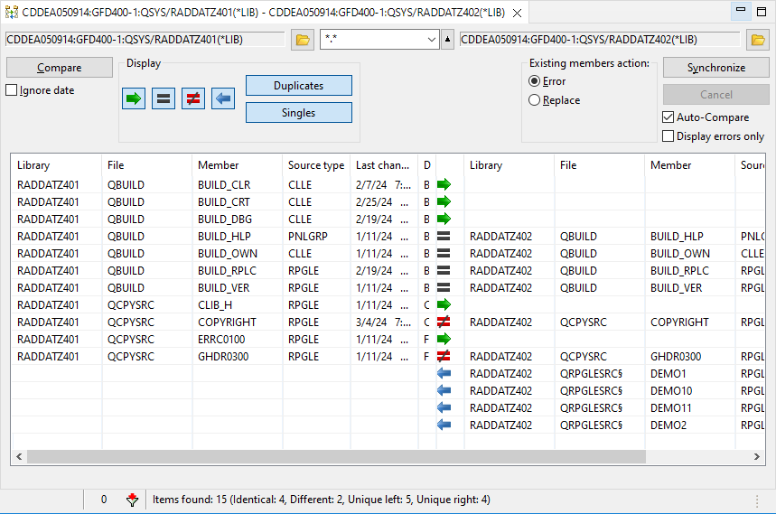
The Synchronize Members Editor compares the date and time the content of the source members has been last changed. This information is displayed in SEU with option 8 next to the member in fields "Change date" and "Change time" .
The content of the source members is not compared line by line, but by a CRC32 checksum that is calculated on the host system.
Synchronizing on the Same System
The Synchronize Members Editor uses the CPYF command for copying source members. Because of the nature of the CPYF command, the last changed date and time of the source members are identical after the synchronization.
Synchronizing on Different Systems
The Synchronize Members Editor downloads the source member to the local computer and uploads it to the remote system. Obviously the last changed date and time of the source members do not match after the synchronization.
The Synchronize Members Editor is started from an object or library filter in the Remote Systems view. Usually one would select two objects of the same kind. But it is also possible to open the editor with one selected object. In that case the second object must be added after the editor has been opened.
The possible object types are:
Select one, preferably two, source files or libraries from the RSE tree and from the context menu (right click) select iSphere Synchronize Membersr. If you select only one source file or library, then you need to open the second file or library from the compare editor.
The "Ignore date" checkbox specifies whether or not the last changed Date and time of the source members is taken into account. If the "Ignore date" checkbox is selected, the last changed date and time is ignored.
Source members can be selected by name and type. Enter the selection mask into the "Filter" field before starting the comparison:
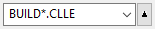
With that filter in place, you will get all "CLLE" source members starting with "BUILD_":
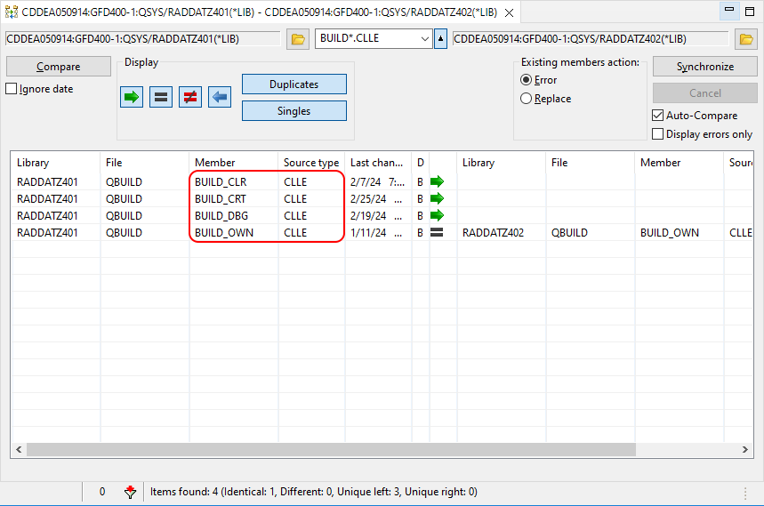
You can add multiple patterns separated by a space, comma or semicolon, for example:
*.rpgle, *.clle.
In case you want to exclude members by name and/or type, you can negate the selection mask by a preceding "|" (pipe symbol):
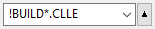
All patterns following the pipe symbol are considered negated, for example:
*.rpgle, |demo*.*.
It is also possible to use regular expressions for filtering items by name and type. Regular expressions must be start with a "<" character. The following example selects all members starting with "DEMO" followed by up to 6 unspecified characters. The member type must be "DSPF" or "PRTF":
<DEMO.{1,6}\.(PRT|DSP)F
| Entering a search string or a regular expression in upper or lower case does not matter, because the case is ignored. |
Once there is a source file or library in both sides and after having set all necessary option, click [Compare] to start a comparison.
After the compare process finishes, note that icons between the two panes clearly display the differences.
Use the filter buttons in the "Display" section to filter the source members after the comparison:
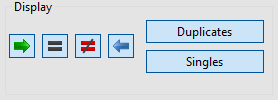
A checked button indicates that the relevant entries are displayed. Uncheck one or more buttons to remove entries from the display. For example, unchecking [=] will remove from the display all source members that are identical in both source files.
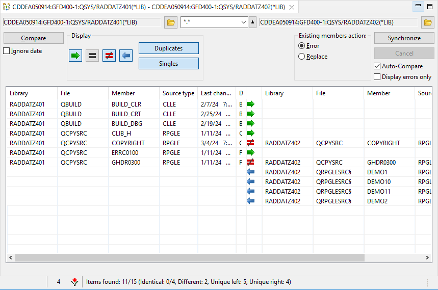
The status bar provides information on filtered entries. In the two libraries compared above, "Items found: 8/15" means that 8 out of 15 members are displayed. Then information about the possible compare status follows. So there are 0 out of 7 identical members and a total of 4 different members displayed. Last but not least there are 3 unique members at the left and 1 unique member at the right without a counterpart on the other side.
Use the context (right click) menu on members to set the left or right arrows in the direction you want synchronization to occur.
The complete context menu looks like this:
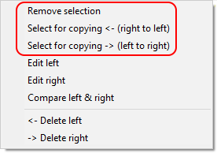
For example you may want to change the "not equal" action using "Select for copying <- (right to left)" or using "Select for copying -> (left to right)". You may want to use "Remove selection" on members which are missing from one of the source files to avoid copying them to the other source file.
Note that you can also conveniently delete, edit and compare source members using the context menu.
Use the "Existing members action" options to specify what to do if a source members exists. Option "Error" means, that the member is not copied and marked as "in error state". "Replace" means, that existing members are replaced silently.
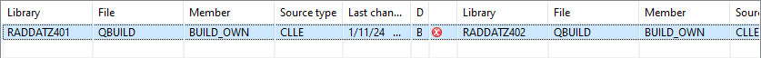
When you are satisfied that you have all the left and right arrows set correctly, click [Synchronize] to make the changes. Note: There is no "Undo" after you click [Synchronize].
| Note the "Auto-Compare" checkbox. If checked, the source files will be compared automatically after the files are synchronized. If not checked, changed table items which no longer match the filter options are not immediately removed from the table. The items are kept in the table to give you a chance to change them again, without changing the filter options. The status bar always show the correct values according to the filter options. You can toggle a filter option of your choice to update the table view. |
| Note the "Display errors only" checkbox. If checked, only the members that are in error state are displayed. That is helpful for identifying members that have not been synchronized due to errors. |
Status line:
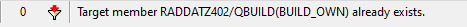
Properties view:
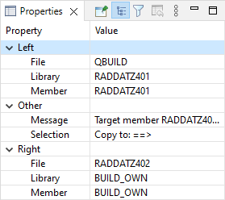
Use option "Display errors only" to filter the member list for items in error status.
There are three ways to find differences by opening the compare dialog:
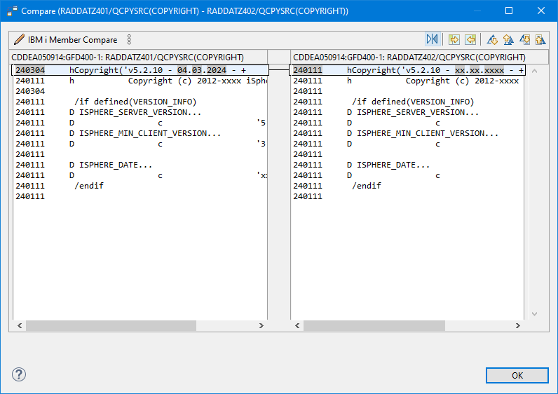